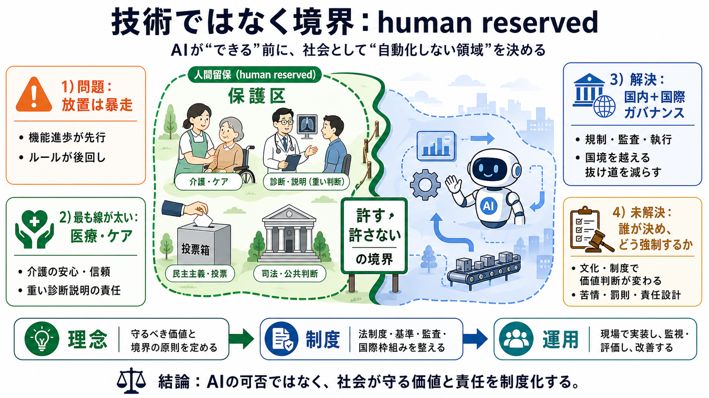

Bill Gates Calls for Human-Reserved Jobs and an International AI Framework | Superpower Daily
Initial source page

人間留保（human reserved）＝可能でも価値が大きい領域は守る
境界の決定者と執行（実効性）を、制度としてどう作るか
「できる/できない」ではなく「許す/許さない」の境界
医療・介護などケア領域＋選挙や課税、治安など公共システム
技術の可否（feasible）ではなく、社会の選択（policy choice）
境界が溶けないよう、制度が“留保”を実現する
ケアや配慮を、効率化の外に置く
境界は規制・手続・監査で固定する
守らせる仕組み（執行）が必要になる
介護：人の関与が安心や信頼に直結する
終末的・不可逆的な病状の説明：心理的インパクトと責任が重い
信頼・配慮・その後の支援まで含めた影響を考える
説明の質と救済の責任が、最終的に人間側に残るべき
情報提示・説明の自動化が進む
人間の関与が価値を担保し、責任の所在が問われる
選挙（voting）
課税・金融（tax / finance）
治安・交通・法執行（safety）
規制設計・監査・執行をセクター間で接続
国境をまたぐ抜け道を減らすため、米中の協力も前提に
国・文化・医療制度で価値判断が変わりうる
監査・苦情・責任・罰則など制度運用が鍵になる
ケアと配慮の優先
責任所在と執行設計
人材・コスト・品質の確保
技術議論を超えて、社会が守る範囲を決める
誰が決め、どう監査し、誰が責任を負うのか
Initial source page
Bill Gates, the Co-Founder of Microsoft, has written a 6,000-Word essay titled "The turbulent AI era is here”. “The cho…
“The highest priority is a monumental task: creating a domestic and international framework for dealing with AI,” he wro…
In a 6,000-word essay, Microsoft’s co-founder warned that world leaders were not doing enough to respond to AI, whic…
“I like the phrase human reserved because it makes me think of nature reserves,” he wrote, describing places “where we c…
State of play:In his new essay on the impact of AI, Gates proposes the notion of "Human Reserved" jobs: occupations or t…